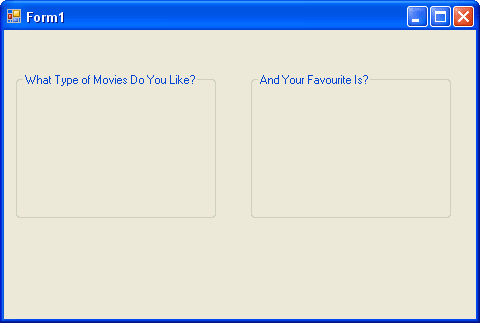
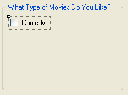
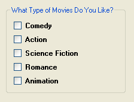
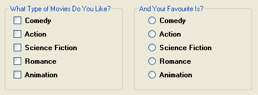
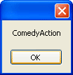
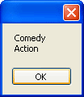
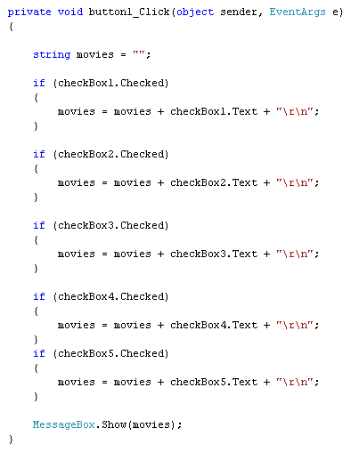
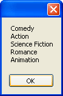
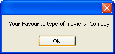

C# .NET - Checkboxes and Radio Buttons
Checkboxes and Radio Buttons are way to offer your users choices. Checkboxes allow a user to select multiple options, whereas Radio Buttons allow only one. Let's see how to use them.
Start a new project. When your new form appears, make it nice and big. Because Checkboxes and Radio Buttons are small and fiddly to move around, its best to place them on a Groupbox. You can then move the Groupbox, and the Checkboxes and Radio Buttons will move with them.
Locate the Groupbox control in the Toolbox on the left, under Containers. It
looks like this:
Draw one out on your form. Locate the Text property in the properties window on the right of C#. Change the Text property to What Type of Movies Do You Like?.
Add a second Groupbox along side of the first one, and set the Text property as And Your Favourite Is?. Your form will then look like this:

We'll place some Checkboxes on the first Groupbox, and some Radio Buttons on the second one.
Locate the Checkbox control on the toolbox, under Common Controls. Draw one out on your first Groupbox.
In the properties area on the right, notice that the default Name property
is checkBox1. Leave it on this, but locate the Text property and
change it to Comedy:

Draw four more checkboxes on the Groupbox, and set the Text properties as follows: Action, Science Fiction, Romance, Animation. (You can copy and paste the first one, instead of drawing them out.) Make the Text bold, and your Groupbox should look like this:

You add Radio Buttons in the same. So add five Radio Buttons to the second Groupbox. Leave the Name property on the defaults. But change the Text to the same as for the Checkboxes. Your form should look like ours below when you are finished:

Now add two buttons, one below each group box. Set the Text for the first one as Selected Movies. Set the Text for the second one as Favourite Movie. Here's what your form should look like now:

Run your form and test it out. What you should find is that you can select as many checkboxes as you like, but only one of the Radio Buttons.
Stop your programme and return to Design Time.
What we'll do now is to write code to get at which selections a user made. First, the Checkboxes.
Double click your Selected Movies button to open up the code window. Our code will make use of the Checked property of Checkboxes. This is either true or false. It will be true if the user places a check in the box, and false if there is no check.
We can use if statements to test the values of each checkbox. We only need to test for a true value:
if (checkBox1.Checked)
{
}
We can also build up a message, if an option was selected:
string movies = "";
if (checkBox1.Checked)
{
movies = movies + checkBox1.Text;
}
MessageBox.Show(movies);
Inside of the if statement, we are building up the string variable we've called movies. We're placing the Text from the Checkbox into this variable.
Add a second if statement to your code:
string movies = "";
if (checkBox1.Checked)
{
movies = movies + checkBox1.Text;
}
if (checkBox2.Checked)
{
movies = movies + checkBox2.Text;
}
MessageBox.Show(movies);
The second if statement is the same as the first, except it refers to checkBox 2 instead of checkBox1.
Test out your code so far. Run your programme and check both boxes. Click your button and the message box should display the following:

As you can see, they are both on the same line, with no spacing.
Stop your programme and return to your code.
To get the choices on separate lines, there are a few ways you can do it. One way is to use the return and new line characters, like this:
movies = movies + checkBox1.Text + "\r\n";
The "\r" gets you a Return character, and the "\n" gets you a Newline character.
But you can also use the inbuilt Newline character. Like this:
movies = movies + checkBox1.Text + Environment.NewLine;
Newline is a property of the Environment class. As its name suggests, it adds a new line to your text.
Add one of the Newline options to both of your if statements, and then test it out. Your message box will look like this, with both options checked:

Return to your code, and add three more if statements. When you are finished, your coding window should look like this one:

When you run your programme and check all the boxes, the message box will look like this, after the button is clicked:

To get at which Radio Button was chosen, the code is the same as for Checkboxes - just test the Checked stated. The only difference is that you need else if, instead of 5 separate if statements:
string ChosenMovie = "";
if (radioButton1.Checked)
{
ChosenMovie = radioButton1.Text;
}
else if (radioButton2.Checked)
{
ChosenMovie = radioButton2.Text;
}
Exercise
Finish the code for your Radio Buttons by adding three more else … if parts.
Display a user's favourite movie type in a message box. When you've completed
this exercise, your message box should look something like ours below:

OK, let's move on from Checkboxes and Radio buttons. In the next section, we'll take a look at how to Debug your code.